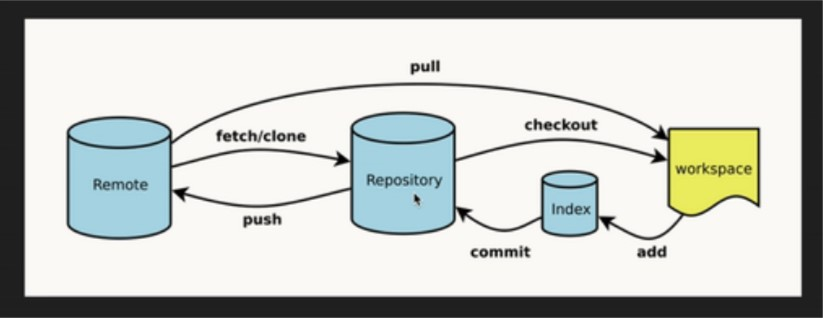
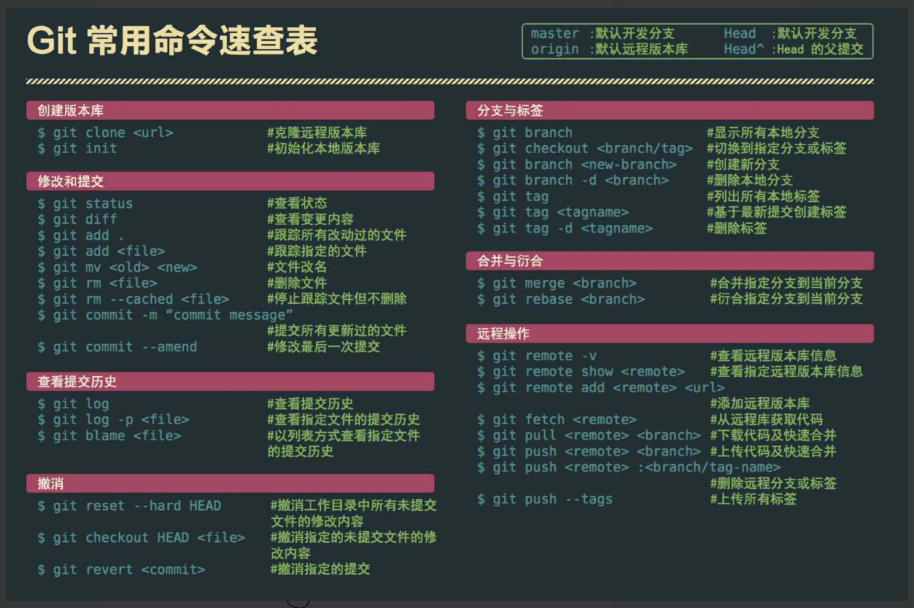

Git基本操作
安装：
根据系统自己选择下载傻瓜式安装
配置：
-
用户名：
1
$ git config --global user.name "你的账号"
-
邮箱：
1
$ git config --global user.email "你的邮箱账号"
-
查看全局配置命令：
1
$ cat ~/.gitconfig
初始化：
-
新建一个文件夹，再当前目录下打开git bash 执行命令：
1
$ git init
查看状态：
-
在当前目录新建一个README.md文档；
-
查看当前git仓库状态：
1
$ git status
-
提交新建文档到缓存区命令：
1
$ git add README.md
-
再次查看当前git仓库状态：
-
截图中也提示，如果想取消本次提交，可执行：
1
$ git rm --cached README.md
提交新文件到暂存区：
-
提交命令：
1
$ git add README.md
-
当前目录下全部文件都提交：
1
$ git add -A
提交新内容到git本地仓库：
-
提交命令：
1
$ git commit -m "add README.md"
m：message，输入你本次提交的内容或日志
设置要提交到的远程仓库：
-
先到自己的github创建新的空白远程仓库；
-
命令：
1
$ git remote add origin https://github.com/ctrl98/git-test.git
-
查看当前远程仓库的信息：
1
$ git remote -v
-
提交新内容到远程仓库命令：
1
$ git push -u origin master
参数说明：
-u：第一次提交的时候加上这个属性，以后提交只需要输入：git push即可
-origin：远端链接的名字，创建远程仓库时默认
-master：仓库主干分支
克隆远程仓库项目到本地：
-
命令：
1
$ git clone https://github.com/ctrl98/git-test.git
更新远程仓库代码到本地：
-
远程仓库做了修改，本地仓库还是旧的，可执行拉取命令：
1
$ git pull
Git分支
分支互相独立，互不影响
-
创建新的分支：
1
$ git branch feature1
-
查看当前分支列表：
1
$ git branch
-
切换分支：
1
$ git checkout feature1
-
查看当前分析目录信息，可发现有master主干上的文件：
-
在feature1分支下创建a.txt文件，并编辑文件内容：this is a.txt，保存并退出。
-
commit feature1的文件到本地仓库中。
-
再创建一个新的分支并切换到该分支：
1
$ git checkout -d feature2
查看一下该分支的目录文件信息，发现有master的README.md文档和feature1的a.txt文档，也就是说是基于feature1的，新分支的内容是基于上个分支的内容。
-
查看文件内容命令：
1
$ cat a.txt
分支简单合并
-
合并命令：
1
$ git merge 分支名称
-
创建并切换到分支feature3:
1
$ git checkout -b feature3
-
新建b.txt文件，并编写内容：hello world：
1
2touch b.txt;
vi b.txt -
提交该文件到本地仓库中：
1
2git add b.txt
git commit -m "add b.txt" -
切换回master主分支中：
1
$ git checkout master
-
删除feature3分支：
1
$ git branch -d feature3
发现无法删除，因为feature3中本地仓库中有提交，提示你要么合并该分支到master，要么就强制删除分支
-
合并feature3到master主分支，Head指针执行master：
1
$ git merge feature3
提示合并成功
远程仓库创建分支显示
-
切换到需要再远程仓库中显示的分支：
1
$ git checkout feature1
-
输入设置命令：
1
$ git push origin feature1
这个时候远程仓库就会有一个feature1分支显示
-
也可以起别名：
1
$ git push origin feature1:f1
删除远程仓库分支
-
本地git命令行切换到要删除远程的分支
-
输入删除命令：
1
git push origin :feature1
查看Git日志
-
命令：
1
git log
-
更简洁地查看：
1
git log --oneline
-
如果提交次数多的话，还可以指定查看最新的提交范围：
1
git log --oneline -5
-
想要查看某一次提交了什么新的内容，可以先复制日志对应的ID，然后执行：
1
git show +id
合并操作
清空上面创建的分支，只留下master
–ff 方式
-
创建并切换至f1分支
-
创建fa.txt文件并提交到本地仓库
-
查看日志：
1
git log --oneline
发现指针HEAD指向了f1
-
切换回master分支进行合并 (默认使用 --ff 模式) ：
1
2git checkout master
git merge f1此时使用的是 fast-forward 方式合并策略，也就是默认的 --ff 模式，可以通过
git merge --help查看相关模式， 这种方式不会创建一个新的commit，只会显示f1分支提交的message。
–no-ff 方式
保证了原有开发的提交量的完整性
-
切换回f1分支
-
创建fb.txt文件并提交到本地仓库：
1
2
3touch fb.txt
git add fb.txt
git commit -m "add fb.txt" -
切换回master分支进行合并：
1
2git checkout master
git merge f1 --no-ff这个时候会进入一个界面，产生了一条message，叫 Merge branch ‘f1’，我们可以修改这个message，默认不修改，保存退出，这个时候发行合并的策略变为：Merge made by the ‘recursive’ strategy，此时查看log日志会出现拐弯现象，把f1的commit和合并时的message两个commit都显示出来了。
-
提交到远程仓库，并创建远程仓库分支f1：
1
2git push
git push origin f1:f1 -
打开github的远程仓库，添加master下的a.txt文件内容：
1
update
这个时候远程仓库是最新的版本，本地是较旧的版本
-
回到本地仓库，同步远程master分支的内容到本地：
1
git pull
-
切换到f1分支，f1分支想要拿到master的最新版本，需要merger一下master，才能和master保持同步：
1
git merge master
再查看一下日志，发现日志对于本次同步只显示了一条 update a.txt 的信息，并没有出现拐弯
-
这个时候master有人作了修改，且回到master分支：
1
2
3
4
5git checkout master
touch m1.txt
git add m1.txt
git commit -m "add m1.txt"
git log --oneline
rebase命令
-
再回到f1分支，如果我们使用git rebase命令来合并，将f1这个分支移动到master分支的最后一次提交，会把master所有提交并入过来：
1
2git rebase master
ll -
再次查看log日志，会发现在f1中会产生一条新的提交，叫"add m1.txt"，重写了项目的提交历史，并且不会带来一条 merge 的commit.
rebase最大的好处：
就是使得提交的历史不会出现分叉，项目提交历史看着非常整齐，他不会像 git merge 那样引入一条分叉
rebase的缺点：安全性和可跟踪性，不要在master上使用rebase命令，rebase命令他不是合并操作，而是复制操作，而merge命令是把两个分支的内容合并到一起。
简单处理合并冲突
-
在f1分支基础上再创建一个f2分支，并随便修改一下a.txt的内容，保存退出提交到本地仓库：
1
2git checkout -b f2
vi a.txt -
回到f1分支，同样修改a.txt文件内容并提交到本地仓库：
1
2git chrckout f1
vi a.txt -
再次回到f2分支，这个时候想拉取一下f1同学写的代码：
1
2git checkout f2
git merge f1这个时候会出现文件冲突，需要解决冲突，查看一下a.txt文件：
1
cat a.txt
发现文件内容很乱，显示两个分支上对这个文件的不同修改的内容，要么使用f1的要么使用f2的，然后修改a.txt，就会看到刚才查看到的内容：
1
vi a.txt
这样修改很麻烦，实际开发中会用工具下来修改
-
使用mergetool命令来检测冲突并解决冲突：
1
git mergetool
再次回车使用vimdiff来解决冲突，把不需要保留的内容删除，然后保存退出，再看一下a.txt文件：
1
cat a.txt
发现内容已经修改为刚才保留下来的内容，然后再commit一下：
1
git commit -m "update a.txt"
Git的回滚撤销
-
git reset 分支名^
回到上一次提交的版本，他只是把HEAD指针移动了，并没有删除东西，默认是–mixed模式（本次提交的东西从暂存区撤销，但仍留在工作区中），在master分支下：
1
2
3touch hello.java
git add hello.java
git commit -m "add hello.java"此时查看log，会发现已经有本条提交记录，这个时候想回退上个版本：
1
git reset master^ # ^符号代表上一次的意思
查看状态：
1
git status
发现hello.java文件处于未提交状态
同样也可以直接：
1
git reset 版本码(查看每条日志前的唯一标识)
hard模式简单粗暴，直接还原上个版本的东西，暂存区、工作目录都清空本次更新的内容：
1
git reset --hard 版本号
-
git revert
此次操作之前和之后的commit和history都会保留，并且把这次撤销作为一次最新的提交，用新的commit来回滚上一个版本；
1
git revert 版本号
执行后会产生一次commit，填写提交的message，直接保存退出，他就把删除了revert那个版本的东西，比如那次提交是新建了一个文件，执行revert后，那个文件就不存在，但是那次提交commit的message就更新为 revert …
所以，在公共分支上使用 git revert，会把提交的信息记录保存下来，可以回溯，在其他分支，可以直接 git reset回退
Git 工作基本流程

最后附上Git命令大全
